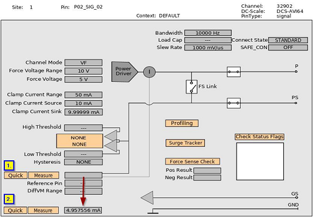

Quick measurements
You can execute a quick repeat measurement using the Hardware view without opening the Measurement window.
About this task
If you have specified a measurement and executed it, you can execute a quick repeat measurement on the site in focus using the Hardware view without opening the Measurement window.
Before you begin
You have already executed a measurement using the Hardware view. For details, see Executing a measurement.
Procedure
In the Hardware view, click Quick.

After clicking Quick (1.), the content changes from plain grey into a measurement value (2.).
Results
The measurement results are displayed for the selected site without requiring additional parameter input.
Functional changes
- Introduced in SmarTest 7.10.0 and 7.6.1